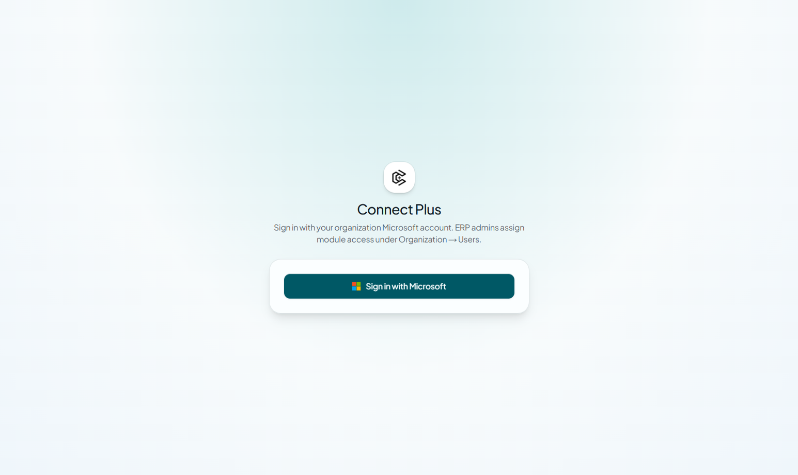
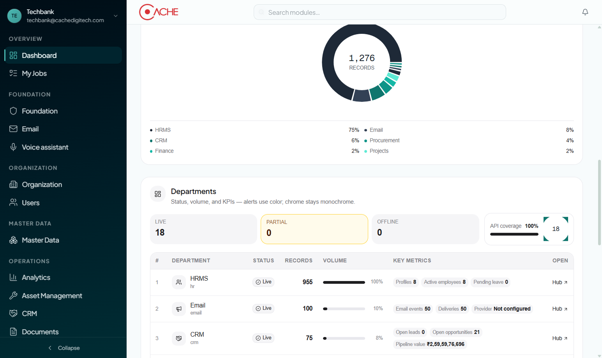
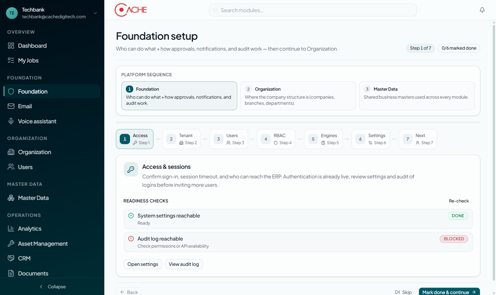
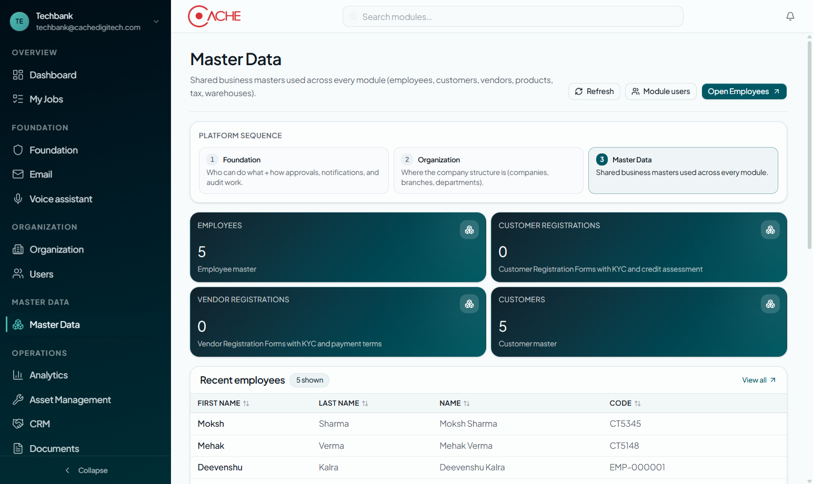
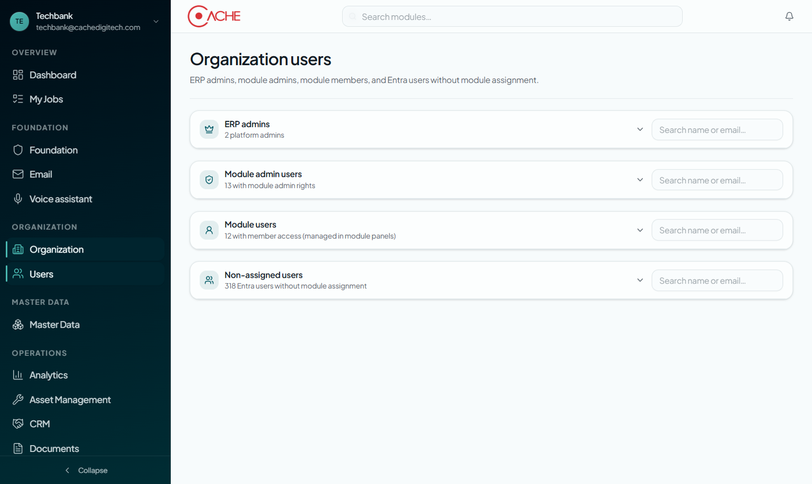
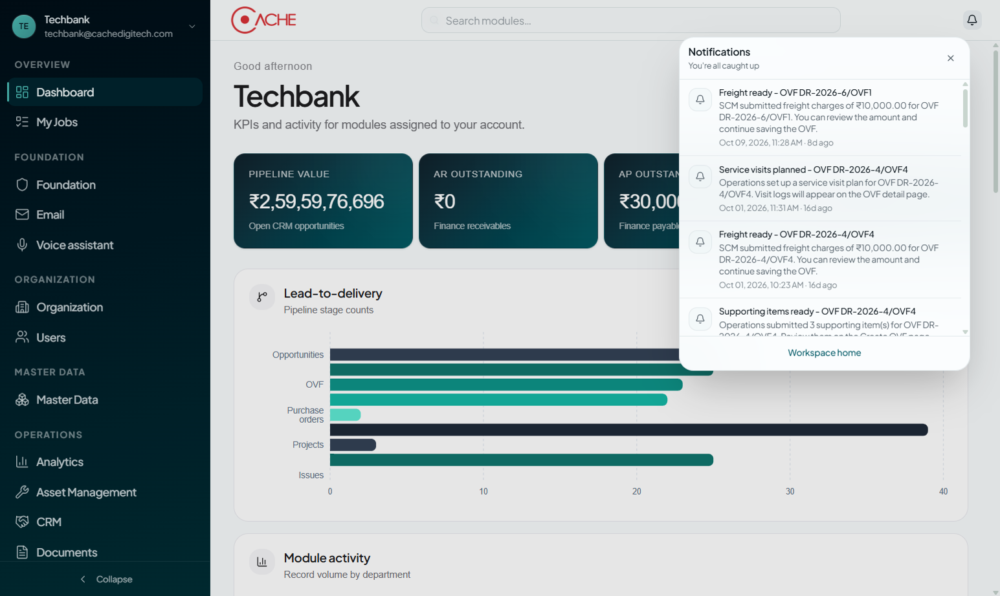
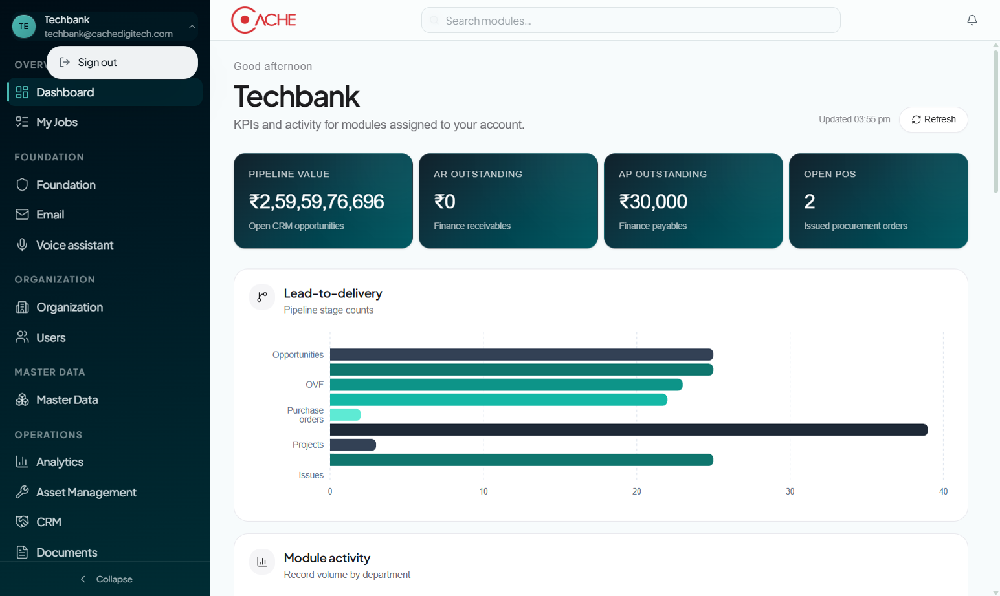
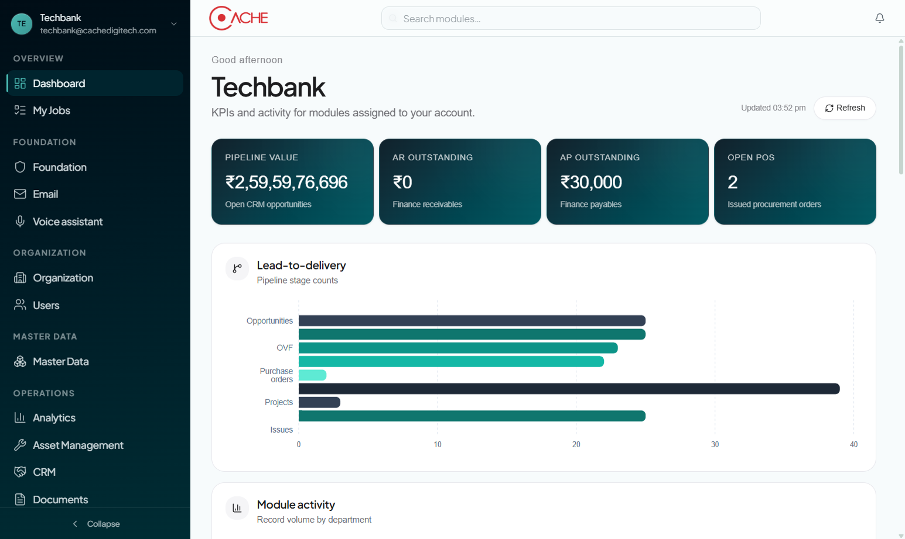
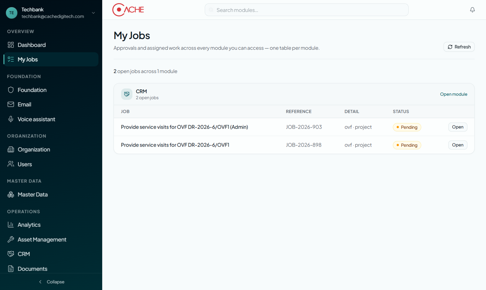
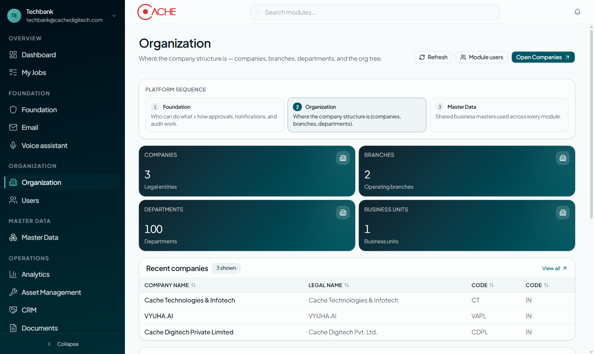

Platform
User Manual
Common orientation for the whole ERP - sign-in, home dashboard, My Jobs, platform pillars, shell navigation, and where each operations module fits
Part A is the common path. Part B is shell reference. Module-specific SOPs live in separate manuals.
Table of contents
- Who this manual is for and access
- Platform map overview
- Part A - Common walkthrough (steps 00-09)
- Part B - Shell reference
- Operations module catalog
- Related module manuals
- Roles and typical checkpoints
Who this manual is for and access
This is the common manual for iConnect Plus. Read it first. It covers sign-in, the home shell, My Jobs, Foundation / Organization / Master Data pillars, notifications, and how operations modules appear in the sidebar.
- Open iConnect Plus and complete Microsoft sign-in.
- Land on Dashboard (Home) and confirm your assigned modules.
- Use My Jobs daily for cross-module approvals.
- Admins complete Foundation - Organization - Master Data before scaling operations.
Platform map overview
The left ERP shell groups navigation into Overview, Foundation, Organization, Master Data, and Operations. Foundation, Organization, and Master Data stay in the same tab; most Operations modules open in their own workspace.
How you move through iConnect Plus
Part A - Common walkthrough
Follow these steps in order. Screenshots use demo session Techbank (techbank@cachedigitech.com).
Step 00 - Sign in
Open iConnect Plus and choose Sign in with Microsoft. Use your organization Microsoft Entra account. ERP admins assign module access under Organization - Users. Passwords are not stored in iConnect Plus for Entra users.

Step 01 - Platform Dashboard (Home)
After sign-in you land on Dashboard (/home). Review KPIs for modules assigned to you (pipeline, AR/AP, open POs), lead-to-delivery stage counts, and module activity. Use Search modules in the top bar to jump quickly.

Step 02 - Departments catalog
Scroll Home to Departments for Live / Partial / Offline status across assigned modules. Open Hub on a row to enter that module. This is the whole-ERP map of what you can access.

Step 03 - My Jobs
Open My Jobs for approvals and assigned work across every module you can access - one table per module. Open a job or Open module to continue in context.

Step 04 - Foundation setup
Under Foundation, run the Foundation setup wizard (Access - Tenant - Users - RBAC - Engines - Settings - Next). Platform sequence is Foundation - Organization - Master Data. Complete readiness checks before inviting more users.

Step 05 - Organization
Configure companies, branches, departments, and the org tree on Organization. This is where company structure lives for every operational module.

Step 06 - Master Data
Maintain shared masters on Master Data: employees, customers, vendors, products, UOM, currencies, taxes, assets, and warehouses. Operational modules consume these.

Step 07 - Organization Users
ERP admins manage access on Organization - Users: ERP admins, module admins, module members, and Entra users without assignment. Module-specific panels also assign domain members inside each module.

Step 08 - Notifications
Use the top-bar Notifications bell for cross-module alerts (freight ready, stage completed, supporting items, and more). Open an item to jump to the related record.

Step 09 - Account menu
Open the sidebar account chip for profile context and Sign out. Always sign out on shared workstations.

Part B - Shell reference
Primary platform panes captured for this manual. Operations modules are listed in the catalog below rather than duplicated here.
B.01 Dashboard
Platform home - KPIs and activity for assigned modules.

B.02 Departments catalog
Live module health and Hub links on Home.

B.03 My Jobs
Cross-module approvals and assigned work.

B.04 Foundation
Access, RBAC, workflows, notifications, audit, settings.

B.05 Organization
Companies, branches, departments, org tree.

B.06 Master Data
Shared employees, customers, vendors, products, tax.

B.07 Organization Users
ERP and module access for Entra users.

Operations module catalog
Modules you may see under Operations (and on Home Departments), depending on assignment. Hidden from the shell nav but still assignable: Inventory, Payroll, Recruitment.
| Module | Path | What it is for |
|---|---|---|
| Analytics | /analytics | Cross-domain analytics |
| Asset Management | /assets | IT / Non-IT asset lifecycle |
| CRM | /crm | Companies, leads, quotes, OVF, deals |
| Documents | /documents | Document management |
| Ecommerce | /ecommerce | Online commerce |
| Finance | /finance | GL, AR, AP, fiscal, reports |
| Helpdesk | /helpdesk | IT helpdesk |
| HRMS | /hr | Hire-to-exit workforce |
| Manufacturing | /manufacturing | Production |
| Marketing & Social | /marketing | Campaigns, content, M365 |
| Procurement | /procurement | SCM, POs, delivery |
| Projects | /projects | Delivery projects and trackers |
| Quality | /quality | Quality management |
| Service | /service | Service request tickets and SLAs |
Related module manuals
Detailed SOP walkthroughs with live screenshots live beside this platform guide under docs/user-manuals/.
| Manual | Folder | Focus |
|---|---|---|
| CRM | crm/ | Company to deal-won |
| Projects | projects/ | Project delivery lifecycle |
| Procurement | procurement/ | SCM / PO / delivery |
| HRMS | hrms/ | Hire-to-exit |
| Assets | assets/ | IT / Non-IT assets |
| Marketing | marketing/ | Campaigns and content |
| Service | service/ | Request tickets and SLAs |
| Platform (this) | platform/ | Whole-ERP orientation |
Roles and typical checkpoints
ERP admin
- Assign users on Organization - Users
- Own Foundation setup and RBAC
- Confirm Master Data readiness
- Grant module admin rights
Module admin
- Manage members inside the module Users pane
- Configure that module's masters and policies
- Monitor My Jobs for that domain
- Train creators / operators
Everyday user
- Sign in with Microsoft
- Work Home KPIs and My Jobs
- Open assigned modules from the sidebar
- Watch Notifications for hand-offs
Typical checkpoints
Tenant policies vary. These are the usual platform checkpoints before day-to-day operations.
| Stage | Owner | Action in UI |
|---|---|---|
| Sign-in | Every user | Sign in with Microsoft (Entra SSO) |
| Access | ERP admin | Organization - Users - assign modules |
| Foundation | ERP admin | Foundation setup wizard readiness checks |
| Structure | ERP admin | Organization - companies / branches / departments |
| Masters | ERP / data owners | Master Data - employees, customers, vendors, products |
| Daily work | All users | Home + My Jobs + assigned Operations modules |